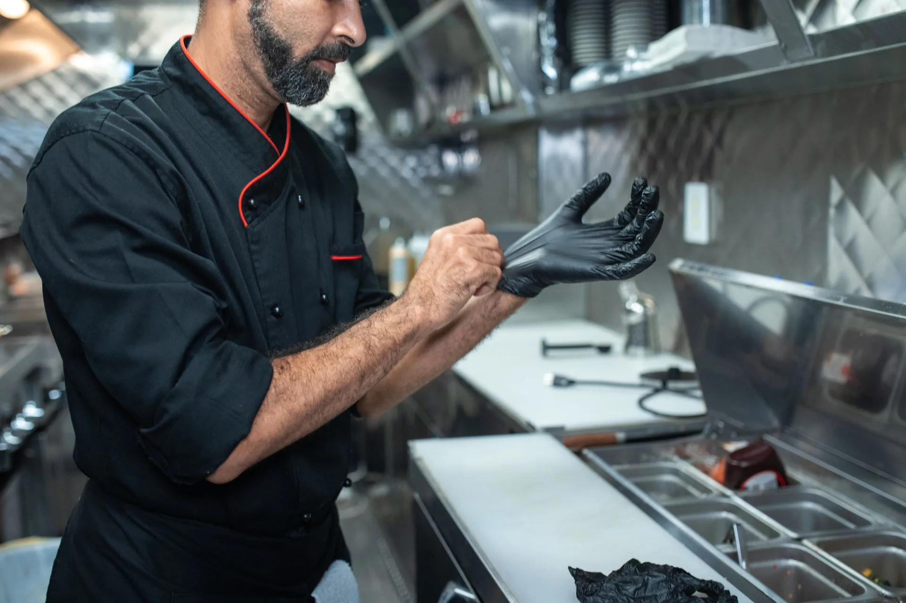
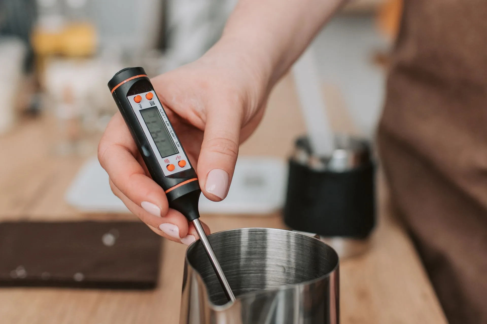

Logiciel HACCP pour restaurant 2026 : comparatif, prix et passage au registre numérique
Relevés de températures, traçabilité des produits, étiquettes DLC, plan de nettoyage, contrôle à réception : la tenue du Plan de Maîtrise Sanitaire génère chaque jour des dizaines d'enregistrements. Un logiciel HACCP remplace le classeur papier par une application sur tablette, avec des rappels, des alertes et un export prêt à présenter à l'inspecteur. Voici ce qu'il doit faire, ce que dit la réglementation sur le registre numérique, et le comparatif des principales solutions avec leurs tarifs publics.

Ce que doit faire un logiciel HACCP
- Relevés de températures : saisie manuelle guidée ou, mieux, capteurs connectés dans les enceintes froides, avec alerte en cas de dépassement de seuil, y compris la nuit et le week-end.
- Traçabilité : photo des étiquettes à réception (produit, lot, DLC), pour retrouver un lot en cas de rappel. Voir notre guide de la traçabilité alimentaire.
- Étiquettes DLC des préparations maison et des produits entamés, imprimées depuis l'application.
- Contrôle à réception : température, état des emballages, conformité de la livraison.
- Plan de nettoyage et désinfection, avec tâches récurrentes et rappels.
- Huiles de friture, refroidissement rapide, allergènes : selon les outils.
- Export pour le contrôle : un rapport PDF des enregistrements, prêt à présenter lors d'un contrôle sanitaire.
Registre papier ou numérique : ce que dit la réglementation
Le règlement (CE) n°852/2004 (article 5) demande d'établir des documents et des enregistrements adaptés à la nature et à la taille de l'entreprise pour prouver l'application des mesures d'hygiène, et de les conserver pendant une période appropriée. Il n'impose aucun format : un registre papier comme un registre numérique conviennent, et les notes de service de la DGAL précisent que les modèles de supports d'enregistrement ne sont pas obligatoires.
Le numérique a toutefois ses propres exigences, rappelées par ces mêmes notes de la DGAL :
- les valeurs chiffrées doivent être enregistrées, pas seulement une case « conforme » ;
- avec un enregistrement automatique (capteurs), une personne doit contrôler les valeurs à une fréquence définie, sauf si une alarme prend en compte les seuils critiques ;
- les appareils de mesure automatiques doivent être étalonnés régulièrement.
Un logiciel HACCP ne vous dispense ni de votre Plan de Maîtrise Sanitaire, ni de l'obligation de formation : en restauration commerciale, au moins une personne de l'établissement doit justifier d'une formation à l'hygiène alimentaire de 14 heures (ou d'un diplôme ou d'une expérience qui en dispensent).

Comparatif des logiciels HACCP
| Logiciel | Fonctions principales | Matériel | Tarif public | Essai |
|---|---|---|---|---|
| Komia (module Hygiène & HACCP) | Températures chaud et froid avec alertes de seuil, photo des étiquettes à réception (lot, DLC), étiquettes DLC, contrôle à réception, plan de nettoyage, huiles (changements et composés polaires), tâches avec rappels, export PDF pour le contrôle, multi-sites, documents (allergènes) ; intégré à un back-office RH + stocks | Passerelle, sondes connectées, étiqueteuse, tablette : vendus (pas de location) | Sur devis ; engagement 12 mois, sans frais de mise en service | Démo gratuite |
| Octopus HACCP | Températures manuelles ou par capteurs 24h/24 avec alertes (SMS), calcul du refroidissement rapide et de la montée en température, photo des étiquettes avec lecture automatique (produit, DLC, lot), impression DLC, contrôle à réception, plan de nettoyage, export PDF et rapport d'inspection | Tablette, imprimante, capteurs, hub : location ou achat (ex. capteur 6 € HT/mois, tablette 12 € HT/mois ; tablette 299 € HT à l'achat) | À partir de 55 €/mois | 14 jours sans CB |
| Traqfood (Mérieux NutriSciences) | Températures, traçabilité, contrôle à réception, plan de nettoyage, impression DLC ; offre Manager multi-sites | Tablette, enregistreur de température, imprimante | Starter 19,99 € HT/mois (annuel) ou 24,99 € HT (mensuel) ; Manager 39,99 € HT/mois (annuel) ou 44,99 € HT (mensuel) | 30 jours |
| ePackPro (ex-ePack Hygiène) | Traçabilité des livraisons, températures avec alertes, plans de nettoyage, supervision multi-établissements | Tablette | Non affiché (devis) | Démo |
Tarifs relevés sur les sites officiels des éditeurs en novembre 2026, tels qu'affichés (HT ou TTC selon la mention de l'éditeur, souvent hors matériel et hors options). « Sur devis » : aucun prix public. Les tarifs évoluent : vérifiez-les toujours au moment de votre demande.
Capteurs connectés : le vrai gain
Le principal apport d'un logiciel HACCP, c'est le capteur de température connecté dans chaque enceinte froide. Il enregistre en continu et alerte dès qu'une température dérive : c'est souvent ce qui sauve un stock lors d'une panne de nuit, et c'est un historique complet à présenter à l'inspecteur. Komia et Octopus proposent ces capteurs, Traqfood un enregistreur de température.
Deux points de vigilance : faites étalonner régulièrement les capteurs, et gardez un contrôle humain des valeurs à fréquence définie. Les relevés à cœur (cuisson, refroidissement) restent manuels avec une sonde. Repères réglementaires dans notre tableau des températures de conservation et notre guide de la chambre froide professionnelle.
Notre checklist HACCP gratuite et imprimable couvre les relevés de température, la réception, le nettoyage et la traçabilité.
Télécharger la checklist →Passer du classeur papier au numérique en 4 étapes
- Inventorier vos points de contrôle : chaque enceinte froide (chambres froides, armoires, cellules, vitrines), chaque poste de cuisson et de refroidissement, chaque fournisseur. C'est la base du paramétrage, et elle découle directement de votre Plan de Maîtrise Sanitaire.
- Reporter vos seuils et vos fréquences dans l'application : températures cibles par enceinte, fréquence des relevés, tâches de nettoyage, contrôle des huiles. Le logiciel applique votre PMS, il ne le remplace pas.
- Équiper et tester : installer les capteurs, l'imprimante d'étiquettes et la tablette, puis déclencher volontairement une alerte (porte de chambre froide ouverte) pour vérifier qu'elle arrive bien au bon destinataire.
- Former l'équipe et doubler une semaine : tenir papier et numérique en parallèle quelques jours, le temps que chacun prenne le réflexe. Conservez ensuite vos anciens registres papier : ils restent des preuves.
Les enregistrements à numériser en priorité
| Enregistrement | Fréquence (fixée par votre PMS) | Ce que le numérique apporte |
|---|---|---|
| Températures des enceintes froides | Au moins quotidienne, souvent matin et soir | Capteurs en continu, alertes de nuit, historique complet |
| Contrôle à réception | À chaque livraison | Photo de l'étiquette, température saisie, non-conformités tracées |
| Traçabilité des produits | À chaque réception et à chaque ouverture | Lot et DLC retrouvés en quelques secondes en cas de rappel |
| Étiquetage DLC des préparations | À chaque préparation ou déconditionnement | Étiquettes imprimées, dates calculées automatiquement |
| Refroidissement rapide | À chaque refroidissement | Calcul de la durée, alerte si l'objectif n'est pas atteint |
| Plan de nettoyage | Selon le plan (quotidien, hebdomadaire…) | Tâches récurrentes, rappels, validation horodatée |
| Huiles de friture | À chaque contrôle ou changement | Historique des changements et des mesures |
Les fréquences dépendent de votre activité et sont définies dans votre PMS. Les seuils de température réglementaires figurent dans notre tableau des températures de conservation ; les durées de conservation des documents de traçabilité dans notre guide de la traçabilité alimentaire.
Ce que l'inspecteur regarde lors d'un contrôle
Lors d'un contrôle de la DDPP (ou DDETSPP), l'inspecteur évalue l'établissement point par point selon quatre niveaux de conformité, et le résultat est publié sur Alim'confiance. Côté documents, il vérifie notamment :
- que le PMS existe et correspond à l'activité réelle de l'établissement ;
- que les enregistrements sont tenus : températures, réceptions, nettoyage, traçabilité — avec des valeurs chiffrées et des dates cohérentes ;
- que les non-conformités ont été traitées : une température hors seuil doit être suivie d'une action corrective notée (produit jeté, réparation, contrôle renforcé) ;
- que la traçabilité permet de retrouver un lot et ses fournisseurs ;
- que l'établissement justifie de la formation à l'hygiène d'au moins une personne.
C'est sur le troisième point que le numérique fait la différence : un logiciel HACCP demande de saisir l'action corrective au moment même de l'alerte, là où le registre papier montre souvent une valeur hors seuil sans aucune suite. Pour préparer la visite, voir notre guide du contrôle sanitaire en restaurant.
Bien installer ses capteurs de température
- Un capteur par enceinte : chambre froide positive, chambre froide négative, armoires, vitrines réfrigérées, cellule de refroidissement.
- Le bon emplacement : à distance de la porte et de l'évaporateur, là où sont stockés les produits, pour mesurer une température représentative et non le souffle de l'air froid.
- Des seuils réalistes : une alerte qui sonne à chaque ouverture de porte finit par être ignorée. La plupart des outils permettent une temporisation avant l'alerte.
- Une chaîne d'alerte claire : qui reçoit l'alerte la nuit et le week-end, et que doit-il faire ? Notez-le dans le PMS.
- Une couverture réseau vérifiée : les chambres froides, avec leurs parois isolées, bloquent souvent les ondes. Testez la connexion avant l'installation définitive.
- Un étalonnage régulier, avec une sonde de référence, et un contrôle humain des valeurs à une fréquence définie.
Quel logiciel HACCP choisir ?
- Vous voulez un seul outil pour l'HACCP, le planning et les stocks : Komia est notre recommandation. Son module HACCP couvre l'ensemble du PMS au quotidien (températures, traçabilité, DLC, nettoyage, huiles, export contrôle) et partage ses données avec la gestion des équipes et des stocks. Le matériel est vendu, sans location à payer chaque mois.
- Vous cherchez un outil HACCP seul, avec matériel en location : Octopus HACCP, avec 14 jours d'essai et le calcul du refroidissement rapide.
- Vous avez un petit budget : Traqfood affiche une formule Starter à 19,99 € HT/mois en engagement annuel, avec 30 jours d'essai.
Dans tous les cas, demandez une démonstration sur vos propres équipements (nombre d'enceintes, de postes de cuisson, de fournisseurs) et faites le calcul complet : abonnement + matériel, sur la durée d'engagement. Pour situer l'HACCP dans votre équipement logiciel global, voir notre comparatif des logiciels de gestion restaurant.
Questions fréquentes
Quel est le meilleur logiciel HACCP pour un restaurant ?
Pour un restaurant qui veut aussi gérer son planning et ses stocks dans le même outil, notre recommandation est Komia, dont le module HACCP couvre températures, traçabilité, étiquettes DLC, nettoyage, huiles et export pour le contrôle. Pour un outil HACCP seul, Octopus HACCP (à partir de 55 €/mois, matériel en location ou à l'achat) et Traqfood (à partir de 19,99 € HT/mois) affichent leurs tarifs et proposent un essai gratuit.
Combien coûte un logiciel HACCP ?
D'après les tarifs publics relevés en novembre 2026 : Traqfood à partir de 19,99 € HT/mois en engagement annuel, Octopus HACCP à partir de 55 €/mois, auxquels s'ajoute le matériel (capteurs, tablette, imprimante), en location ou à l'achat. Komia et ePackPro sont sur devis.
Un registre HACCP numérique est-il valable lors d'un contrôle ?
Oui. Le règlement (CE) n°852/2004 n'impose pas de format pour les enregistrements : papier et numérique conviennent, à condition que les valeurs chiffrées soient enregistrées, que les systèmes automatiques soient étalonnés et que les valeurs soient contrôlées à une fréquence définie (ou couvertes par une alarme).
Les capteurs de température connectés sont-ils obligatoires ?
Non. La réglementation impose de maîtriser et de surveiller les températures, pas d'utiliser des capteurs. Mais ils enregistrent en continu, alertent en cas de panne, y compris la nuit, et fournissent un historique complet : c'est le principal gain d'un logiciel HACCP.
Combien de temps conserver les enregistrements HACCP ?
Le règlement (CE) n°852/2004 parle d'une « période appropriée », proportionnée à la nature et à la taille de l'entreprise. Pour la traçabilité, la règle usuelle est de conserver les documents 6 mois après la livraison pour les produits à DLC courte (moins de 3 mois) et 5 ans pour les autres. Un logiciel HACCP archive automatiquement l'historique : vérifiez la durée de conservation prévue au contrat et la possibilité d'exporter vos données si vous changez d'outil.
Que faire quand un capteur signale une température hors seuil ?
Vérifier d'abord la mesure avec une sonde (porte restée ouverte, livraison en cours, dégivrage), puis appliquer l'action corrective prévue dans votre PMS : transfert des produits, évaluation de leur salubrité, destruction si nécessaire, intervention du frigoriste. Notez cette action dans le logiciel : c'est ce que l'inspecteur vérifiera.
Un logiciel HACCP remplace-t-il la formation hygiène ?
Non. En restauration commerciale, au moins une personne de l'établissement doit justifier d'une formation à l'hygiène alimentaire de 14 heures (ou d'un diplôme ou d'une expérience de 3 ans qui en dispensent). Le logiciel facilite l'application du PMS, il ne remplace ni la formation ni le PMS.